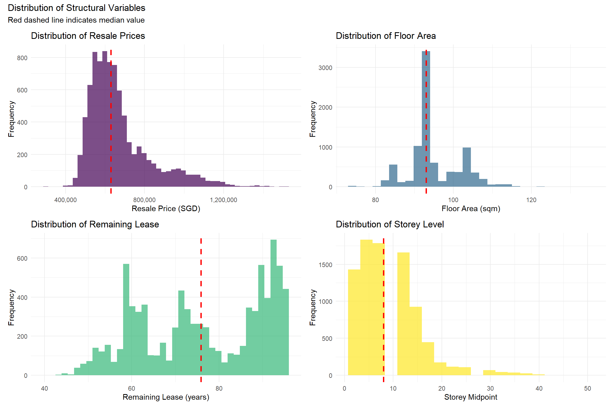
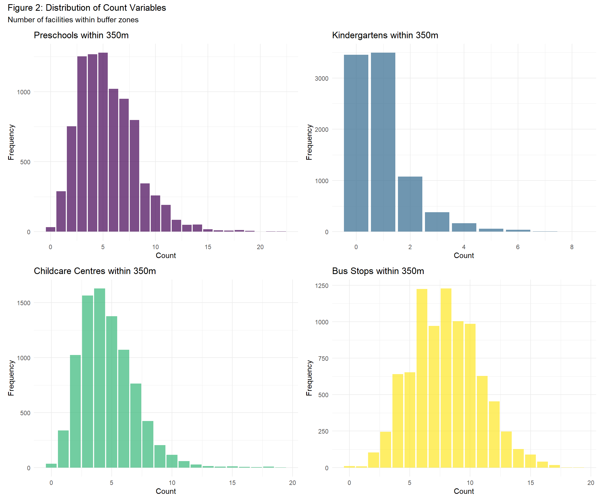
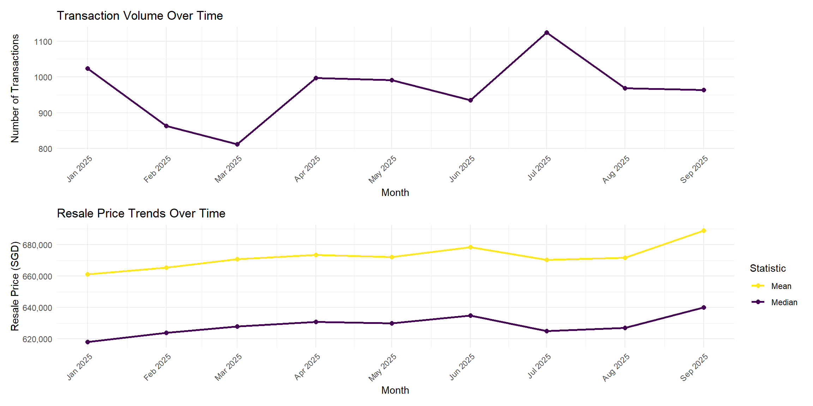

Code
pacman::p_load(sf, spdep, GWmodel, tidyverse, lubridate, tmap, ggplot2, corrplot, httr, jsonlite)The objective of this take-home exercise is to develop a spatially informed model to determine factors affecting or to predict HDB resale prices in Singapore, making use of appropriate geospatial analytics methods.
pacman::p_load(sf, spdep, GWmodel, tidyverse, lubridate, tmap, ggplot2, corrplot, httr, jsonlite)| Dataset Name | Description | Use Case | Format |
| HDB Resale Flat Prices | Transaction records of HDB resale flats. Filtered for 4-room flats only. | Primary outcome variable (resale_price) and source of structural predictors (floor_area_sqm, remaining_lease_years, storey_midpoint) |
CSV |
| Singapore Boundary | A polygon feature data providing information of URA 2014 Master Plan Planning Subzone boundary data | Provides spatial context for mapping. Used as basemap reference in visualizations. | SHP (point geometry) |
| Hawker Centres | Point locations of hawker centres, representing affordable dining options and community gathering spaces. | Calculate proximity to nearest hawker centre (dist_hawker) |
GeoJSON |
| Parks | Point or polygon locations of national parks, regional parks, and neighborhood parks managed by NParks. | Calculate proximity to nearest park (dist_park) |
GeoJSON |
| Supermarkets | Point locations of major supermarket chains across Singapore. | Calculate proximity to nearest supermarket (dist_supermarket) |
GeoJSON |
| Eldercare Centres | Point locations of eldercare facilities including senior activity centres, senior care centres, and nursing homes. | Calculate proximity to nearest eldercare facility (dist_eldercare), relevant for multi-generational households and aging population considerations. |
SHP (point geometry) |
| Preschools | Point locations of registered preschools across Singapore, including both public and private institutions. | Count number of kindergartens within 350m buffer (n_preschool_350m) |
GeoJSON |
| Kindergartens | Point locations of registered kindergartens across Singapore, including both public and private institutions. | Count number of kindergartens within 350m buffer (n_kindergarten_350m) |
GeoJSON |
| Childcare Centres | Point locations of licensed childcare centres providing infant and toddler care services. | Count number of childcare centres within 350m buffer (n_childcare_350m) to evaluate childcare accessibility, important for working parents. |
GeoJSON |
| Bus Stops | Point locations of all public bus stops in Singapore’s bus network. | Count number of bus stops within 350m buffer (n_busstop_350m) as a measure of public transport connectivity and accessibility. |
SHP (point geometry) |
# Import Singapore boundary (adjust path as needed)
singapore_boundary <- st_read(
dsn = "data/geospatial",
layer = "MP14_SUBZONE_WEB_PL", # or your boundary layer name
quiet = TRUE
) %>%
st_transform(3414) %>%
st_union() # Dissolve to single boundary
cat("✓ Singapore boundary imported\n")✓ Singapore boundary importedcat(" CRS:", st_crs(singapore_boundary)$input, "\n") CRS: EPSG:3414 st_bbox(singapore_boundary) xmin ymin xmax ymax
2667.538 15748.721 56396.440 50256.334 geocode <- function(block, streetname) {
base_url <- "https://onemap.gov.sg/api/common/elastic/search"
address <- paste(block, streetname, sep=" ")
query <- list("searchVal" = address,
"returnGeom" = "Y",
"getAddrDetails" = "N",
"pageNum" = "1")
res <- GET(base_url, query=query)
restext <- content(res, as="text")
output <- fromJSON(restext) %>%
as.data.frame %>%
select(results.LATITUDE, results.LONGITUDE)
return(output)
}HDBresale$street_name <- gsub("ST\\.", "SAINT", HDBresale$street_name)HDBresale$LATITUDE <- 0
HDBresale$LONGITUDE <- 0
for (i in 1:nrow(HDBresale)) {
temp_output <- geocode(HDBresale[i, 4], HDBresale[i, 5])
HDBresale$LATITUDE[i] <- temp_output$results.LATITUDE
HDBresale$LONGITUDE[i] <- temp_output$results.LONGITUDE
}HDBresale_sf <- HDBresale %>%
st_as_sf(
coords = c("LONGITUDE", "LATITUDE"),
crs=4326
) %>%
st_transform(crs=3414)cbd_data <- data.frame(
name = c("Raffles Place", "Tanjong Pagar", "Marina Bay"),
x = c(30214.5, 29527.8, 31324.7),
y = c(29414.2, 28645.1, 29877.3)
)hawkerCenters = st_read(
"data/geospatial/HawkerCentresGEOJSON.geojson") %>%
st_transform(crs= 3414)Reading layer `SSOT_HAWKERCENTRES' from data source
`D:\ngoclinhnguyen-2806\ISSS626-GAA\Take-home_Ex\Take-home_Ex03\data\geospatial\HawkerCentresGEOJSON.geojson'
using driver `GeoJSON'
Simple feature collection with 129 features and 20 fields
Geometry type: POINT
Dimension: XY
Bounding box: xmin: 103.6972 ymin: 1.272761 xmax: 103.9882 ymax: 1.448263
Geodetic CRS: WGS 84parks = st_read(
"data/geospatial/Parks.geojson") %>%
st_transform(crs= 3414)Reading layer `Parks' from data source
`D:\ngoclinhnguyen-2806\ISSS626-GAA\Take-home_Ex\Take-home_Ex03\data\geospatial\Parks.geojson'
using driver `GeoJSON'
Simple feature collection with 441 features and 4 fields
Geometry type: POINT
Dimension: XY
Bounding box: xmin: 103.6929 ymin: 1.264367 xmax: 104.0538 ymax: 1.461944
Geodetic CRS: WGS 84supermarkets = st_read(
"data/geospatial/SupermarketsGEOJSON.geojson") %>%
st_transform(crs= 3414)Reading layer `SupermarketsGEOJSON' from data source
`D:\ngoclinhnguyen-2806\ISSS626-GAA\Take-home_Ex\Take-home_Ex03\data\geospatial\SupermarketsGEOJSON.geojson'
using driver `GeoJSON'
Simple feature collection with 526 features and 2 fields
Geometry type: POINT
Dimension: XYZ
Bounding box: xmin: 103.6258 ymin: 1.24715 xmax: 104.0036 ymax: 1.461526
z_range: zmin: 0 zmax: 0
Geodetic CRS: WGS 84eldercare <- st_read(
dsn = "data/geospatial",
layer = "ELDERCARE"
) %>%
st_transform(crs = 3414)Reading layer `ELDERCARE' from data source
`D:\ngoclinhnguyen-2806\ISSS626-GAA\Take-home_Ex\Take-home_Ex03\data\geospatial'
using driver `ESRI Shapefile'
Simple feature collection with 133 features and 18 fields
Geometry type: POINT
Dimension: XY
Bounding box: xmin: 14481.92 ymin: 28218.43 xmax: 41665.14 ymax: 46804.9
Projected CRS: SVY21preschool = st_read(
"data/geospatial/PreSchoolsLocation.kml") %>%
st_transform(crs= 3414)Reading layer `PRESCHOOLS_LOCATION' from data source
`D:\ngoclinhnguyen-2806\ISSS626-GAA\Take-home_Ex\Take-home_Ex03\data\geospatial\PreSchoolsLocation.kml'
using driver `KML'
Simple feature collection with 2290 features and 2 fields
Geometry type: POINT
Dimension: XYZ
Bounding box: xmin: 103.6878 ymin: 1.247759 xmax: 103.9897 ymax: 1.462134
z_range: zmin: 0 zmax: 0
Geodetic CRS: WGS 84kindergartens = st_read(
"data/geospatial/Kindergartens.geojson") %>%
st_transform(crs= 3414)Reading layer `Kindergartens' from data source
`D:\ngoclinhnguyen-2806\ISSS626-GAA\Take-home_Ex\Take-home_Ex03\data\geospatial\Kindergartens.geojson'
using driver `GeoJSON'
Simple feature collection with 448 features and 2 fields
Geometry type: POINT
Dimension: XYZ
Bounding box: xmin: 103.6887 ymin: 1.247759 xmax: 103.9717 ymax: 1.455452
z_range: zmin: 0 zmax: 0
Geodetic CRS: WGS 84childCareServices = st_read(
"data/geospatial/ChildCareServices.geojson") %>%
st_transform(crs= 3414)Reading layer `ChildCareServices' from data source
`D:\ngoclinhnguyen-2806\ISSS626-GAA\Take-home_Ex\Take-home_Ex03\data\geospatial\ChildCareServices.geojson'
using driver `GeoJSON'
Simple feature collection with 1925 features and 2 fields
Geometry type: POINT
Dimension: XYZ
Bounding box: xmin: 103.6878 ymin: 1.247759 xmax: 103.9897 ymax: 1.462134
z_range: zmin: 0 zmax: 0
Geodetic CRS: WGS 84busStops <- st_read(
dsn = "data/geospatial",
layer = "BusStop"
) %>%
st_transform(crs = 3414)Reading layer `BusStop' from data source
`D:\ngoclinhnguyen-2806\ISSS626-GAA\Take-home_Ex\Take-home_Ex03\data\geospatial'
using driver `ESRI Shapefile'
Simple feature collection with 5172 features and 2 fields
Geometry type: POINT
Dimension: XY
Bounding box: xmin: 3970.122 ymin: 26482.1 xmax: 48285.52 ymax: 52983.82
Projected CRS: SVY21Simple feature collection with 3 features and 1 field
Geometry type: POINT
Dimension: XY
Bounding box: xmin: 29527.8 ymin: 28645.1 xmax: 31324.7 ymax: 29877.3
Projected CRS: SVY21 / Singapore TM
name geometry
1 Raffles Place POINT (30214.5 29414.2)
2 Tanjong Pagar POINT (29527.8 28645.1)
3 Marina Bay POINT (31324.7 29877.3)# Preschool
within_350m <- st_is_within_distance(
HDBresale_sf, preschool, dist = 350)
HDBresale_sf <- HDBresale_sf %>%
mutate(N_350M_PRESCHOOL = map_int(within_350m, length))
# Kindergartens
within_350m <- st_is_within_distance(
HDBresale_sf, kindergartens, dist = 350)
HDBresale_sf <- HDBresale_sf %>%
mutate(N_350M_KINDERG = map_int(within_350m, length))
# Child care
within_350m <- st_is_within_distance(
HDBresale_sf, childCareServices, dist = 350)
HDBresale_sf <- HDBresale_sf %>%
mutate(N_350M_CHILDCARE = map_int(within_350m, length))
# Bus Stop
within_350m <- st_is_within_distance(
HDBresale_sf, busStops, dist = 350)
HDBresale_sf <- HDBresale_sf %>%
mutate(N_350M_BUSSTOP = map_int(within_350m, length))calc_nearest_dist <- function(from_geom, to_sf) {
as.numeric(
st_distance(
from_geom,
to_sf[st_nearest_feature(from_geom, to_sf), ],
by_element = TRUE
)
)
}hdb_model <- HDBresale_sf %>%
mutate(
PROX_CBD = calc_nearest_dist(geometry, cbd_sf),
PROX_HAWKER = calc_nearest_dist(geometry, hawkerCenters),
PROX_PARK = calc_nearest_dist(geometry, parks),
PROX_SUPERMARKET = calc_nearest_dist(geometry, supermarkets),
PROX_ELDERCARE = calc_nearest_dist(geometry, eldercare)
)
hdb_modelSimple feature collection with 8679 features and 20 fields
Geometry type: POINT
Dimension: XY
Bounding box: xmin: 11597.31 ymin: 28287.8 xmax: 42645.18 ymax: 48741.06
Projected CRS: SVY21 / Singapore TM
# A tibble: 8,679 × 21
month town flat_type block street_name storey_range floor_area_sqm
* <chr> <chr> <chr> <chr> <chr> <chr> <dbl>
1 2025-01 ANG MO KIO 4 ROOM 337 ANG MO KIO AV… 13 TO 15 91
2 2025-01 ANG MO KIO 4 ROOM 310C ANG MO KIO AV… 10 TO 12 94
3 2025-01 ANG MO KIO 4 ROOM 337 ANG MO KIO AV… 10 TO 12 91
4 2025-02 ANG MO KIO 4 ROOM 226 ANG MO KIO AV… 07 TO 09 91
5 2025-02 ANG MO KIO 4 ROOM 310C ANG MO KIO AV… 28 TO 30 96
6 2025-02 ANG MO KIO 4 ROOM 226 ANG MO KIO AV… 04 TO 06 92
7 2025-03 ANG MO KIO 4 ROOM 304 ANG MO KIO AV… 10 TO 12 98
8 2025-03 ANG MO KIO 4 ROOM 303 ANG MO KIO AV… 04 TO 06 97
9 2025-03 ANG MO KIO 4 ROOM 310B ANG MO KIO AV… 16 TO 18 94
10 2025-03 ANG MO KIO 4 ROOM 310B ANG MO KIO AV… 16 TO 18 87
# ℹ 8,669 more rows
# ℹ 14 more variables: flat_model <chr>, lease_commence_date <dbl>,
# remaining_lease <chr>, resale_price <dbl>, geometry <POINT [m]>,
# N_350M_PRESCHOOL <int>, N_350M_KINDERG <int>, N_350M_CHILDCARE <int>,
# N_350M_BUSSTOP <int>, PROX_CBD <dbl>, PROX_HAWKER <dbl>, PROX_PARK <dbl>,
# PROX_SUPERMARKET <dbl>, PROX_ELDERCARE <dbl>glimpse(hdb_model)Rows: 8,679
Columns: 21
$ month <chr> "2025-01", "2025-01", "2025-01", "2025-02", "2025-…
$ town <chr> "ANG MO KIO", "ANG MO KIO", "ANG MO KIO", "ANG MO …
$ flat_type <chr> "4 ROOM", "4 ROOM", "4 ROOM", "4 ROOM", "4 ROOM", …
$ block <chr> "337", "310C", "337", "226", "310C", "226", "304",…
$ street_name <chr> "ANG MO KIO AVE 1", "ANG MO KIO AVE 1", "ANG MO KI…
$ storey_range <chr> "13 TO 15", "10 TO 12", "10 TO 12", "07 TO 09", "2…
$ floor_area_sqm <dbl> 91, 94, 91, 91, 96, 92, 98, 97, 94, 87, 97, 82, 92…
$ flat_model <chr> "New Generation", "Model A", "New Generation", "Ne…
$ lease_commence_date <dbl> 1982, 2012, 1982, 1978, 2012, 1978, 1977, 1977, 20…
$ remaining_lease <chr> "56 years 03 months", "86 years 09 months", "56 ye…
$ resale_price <dbl> 582000, 865000, 530000, 560000, 1038000, 542000, 6…
$ geometry <POINT [m]> POINT (30036.29 38360.76), POINT (29283.45 3…
$ N_350M_PRESCHOOL <int> 3, 6, 3, 7, 6, 7, 6, 8, 2, 2, 2, 2, 6, 7, 6, 6, 7,…
$ N_350M_KINDERG <int> 1, 1, 1, 2, 1, 2, 1, 1, 0, 0, 0, 0, 2, 1, 1, 1, 2,…
$ N_350M_CHILDCARE <int> 3, 5, 3, 5, 5, 5, 5, 7, 2, 2, 2, 2, 4, 6, 5, 5, 5,…
$ N_350M_BUSSTOP <int> 7, 4, 7, 7, 4, 7, 6, 7, 5, 5, 5, 5, 6, 4, 4, 4, 7,…
$ PROX_CBD <dbl> 8580.742, 8877.927, 8580.742, 9398.605, 8877.927, …
$ PROX_HAWKER <dbl> 388.7647, 381.4729, 388.7647, 132.0052, 381.4729, …
$ PROX_PARK <dbl> 425.5483, 635.8962, 425.5483, 356.4783, 635.8962, …
$ PROX_SUPERMARKET <dbl> 284.9091, 314.4801, 284.9091, 186.2702, 314.4801, …
$ PROX_ELDERCARE <dbl> 259.7684, 254.9544, 259.7684, 397.6108, 254.9544, …Dataset dimensions: 8679 rows × 21 columnsmissing_summary <- hdb_model %>%
st_drop_geometry() %>% # Remove geometry for cleaner summary
summarise(across(everything(), ~sum(is.na(.)))) %>%
pivot_longer(everything(), names_to = "variable", values_to = "missing_count") %>%
filter(missing_count > 0) %>%
arrange(desc(missing_count))
if(nrow(missing_summary) > 0) {
cat("\n⚠ Missing values detected:\n")
print(missing_summary)
} else {
cat("\n✓ No missing values detected\n")
}
✓ No missing values detectedPurpose: Prepare structural variables for modeling
hdb_clean <- hdb_model %>%
mutate(
# Convert storey_range (e.g., "13 TO 15" → 14)
storey_midpoint = as.numeric(str_extract(storey_range, "^\\d+")) + 1,
# Convert remaining_lease to numeric years
# Original format like "56 years 03 months"
remaining_lease_years = case_when(
str_detect(remaining_lease, "years") & str_detect(remaining_lease, "months") ~
as.numeric(str_extract(remaining_lease, "^\\d+")) +
as.numeric(str_extract(remaining_lease, "(?<=years )\\d+")) / 12,
str_detect(remaining_lease, "years") ~
as.numeric(str_extract(remaining_lease, "^\\d+")),
TRUE ~ NA_real_
),
# Convert month to date
month_date = as.Date(paste0(month, "-01")),
# Extract year and month for temporal analysis
year = year(month_date),
month_num = month(month_date)
)
# Check transformations
cat("✓ Storey midpoint range:",
min(hdb_clean$storey_midpoint, na.rm = TRUE), "to",
max(hdb_clean$storey_midpoint, na.rm = TRUE), "\n")✓ Storey midpoint range: 2 to 50 ✓ Remaining lease range: 40.4 to 95.3 yearsresale_price and resale_price# Function to detect outliers using IQR method
detect_outliers <- function(x) {
Q1 <- quantile(x, 0.25, na.rm = TRUE)
Q3 <- quantile(x, 0.75, na.rm = TRUE)
IQR <- Q3 - Q1
lower_bound <- Q1 - 1.5 * IQR
upper_bound <- Q3 + 1.5 * IQR
return(x < lower_bound | x > upper_bound)
}
# Check outliers in resale_price
outlier_price <- detect_outliers(hdb_clean$resale_price)
cat("Outliers in resale_price:", sum(outlier_price),
"(", round(sum(outlier_price)/nrow(hdb_clean)*100, 2), "%)\n")Outliers in resale_price: 613 ( 7.06 %)resale_price and resale_priceOutliers in floor_area_sqm: 118 ( 1.36 %)resale_price and resale_price
For now, we don’t remove outliers yet. We just flag them using 2 additional columns of outlier_price and outlier_area, and keep in the dataset. Those detected will be report “TRUE” in outlier_price or outlier_area columns.
hdb_clean <- hdb_clean %>%
mutate(
outlier_price = detect_outliers(resale_price),
outlier_area = detect_outliers(floor_area_sqm)
)
hdb_cleanSimple feature collection with 8679 features and 27 fields
Geometry type: POINT
Dimension: XY
Bounding box: xmin: 11597.31 ymin: 28287.8 xmax: 42645.18 ymax: 48741.06
Projected CRS: SVY21 / Singapore TM
# A tibble: 8,679 × 28
month town flat_type block street_name storey_range floor_area_sqm
* <chr> <chr> <chr> <chr> <chr> <chr> <dbl>
1 2025-01 ANG MO KIO 4 ROOM 337 ANG MO KIO AV… 13 TO 15 91
2 2025-01 ANG MO KIO 4 ROOM 310C ANG MO KIO AV… 10 TO 12 94
3 2025-01 ANG MO KIO 4 ROOM 337 ANG MO KIO AV… 10 TO 12 91
4 2025-02 ANG MO KIO 4 ROOM 226 ANG MO KIO AV… 07 TO 09 91
5 2025-02 ANG MO KIO 4 ROOM 310C ANG MO KIO AV… 28 TO 30 96
6 2025-02 ANG MO KIO 4 ROOM 226 ANG MO KIO AV… 04 TO 06 92
7 2025-03 ANG MO KIO 4 ROOM 304 ANG MO KIO AV… 10 TO 12 98
8 2025-03 ANG MO KIO 4 ROOM 303 ANG MO KIO AV… 04 TO 06 97
9 2025-03 ANG MO KIO 4 ROOM 310B ANG MO KIO AV… 16 TO 18 94
10 2025-03 ANG MO KIO 4 ROOM 310B ANG MO KIO AV… 16 TO 18 87
# ℹ 8,669 more rows
# ℹ 21 more variables: flat_model <chr>, lease_commence_date <dbl>,
# remaining_lease <chr>, resale_price <dbl>, geometry <POINT [m]>,
# N_350M_PRESCHOOL <int>, N_350M_KINDERG <int>, N_350M_CHILDCARE <int>,
# N_350M_BUSSTOP <int>, PROX_CBD <dbl>, PROX_HAWKER <dbl>, PROX_PARK <dbl>,
# PROX_SUPERMARKET <dbl>, PROX_ELDERCARE <dbl>, storey_midpoint <dbl>,
# remaining_lease_years <dbl>, month_date <date>, year <dbl>, …structural_vars <- c("resale_price", "floor_area_sqm", "storey_midpoint",
"remaining_lease_years")
structural_summary <- hdb_clean %>%
st_drop_geometry() %>%
select(all_of(structural_vars)) %>%
summarise(across(everything(),
list(mean = ~mean(., na.rm = TRUE),
median = ~median(., na.rm = TRUE),
sd = ~sd(., na.rm = TRUE),
min = ~min(., na.rm = TRUE),
max = ~max(., na.rm = TRUE)),
.names = "{.col}_{.fn}")) %>%
pivot_longer(everything(), names_to = "stat", values_to = "value") %>%
separate(stat, into = c("variable", "statistic"), sep = "_(?=[^_]+$)") %>%
pivot_wider(names_from = statistic, values_from = value)
knitr::kable(structural_summary,
digits = 2,
caption = "Descriptive Statistics: Structural Variables",
col.names = c("Variable", "Mean", "Median", "SD", "Min", "Max"))| Variable | Mean | Median | SD | Min | Max |
|---|---|---|---|---|---|
| resale_price | 672451.30 | 630000.00 | 160615.64 | 300000.00 | 1.518e+06 |
| floor_area_sqm | 94.89 | 93.00 | 6.74 | 74.00 | 1.350e+02 |
| storey_midpoint | 9.29 | 8.00 | 6.37 | 2.00 | 5.000e+01 |
| remaining_lease_years | 76.34 | 75.83 | 14.12 | 40.42 | 9.533e+01 |
prox_vars <- hdb_clean %>%
st_drop_geometry() %>%
select(starts_with("PROX_")) %>%
names()
location_summary <- hdb_clean %>%
st_drop_geometry() %>%
select(all_of(prox_vars)) %>%
summarise(across(everything(),
list(mean = ~mean(., na.rm = TRUE),
median = ~median(., na.rm = TRUE),
sd = ~sd(., na.rm = TRUE),
min = ~min(., na.rm = TRUE),
max = ~max(., na.rm = TRUE)),
.names = "{.col}_{.fn}")) %>%
pivot_longer(everything(), names_to = "stat", values_to = "value") %>%
separate(stat, into = c("variable", "statistic"), sep = "_(?=[^_]+$)") %>%
pivot_wider(names_from = statistic, values_from = value)
knitr::kable(location_summary,
digits = 2,
caption = "Descriptive Statistics: Location Variables (Proximity in meters)",
col.names = c("Variable", "Mean", "Median", "SD", "Min", "Max"))| Variable | Mean | Median | SD | Min | Max |
|---|---|---|---|---|---|
| PROX_CBD | 12321.88 | 12887.07 | 4550.59 | 479.92 | 20107.19 |
| PROX_HAWKER | 730.10 | 647.02 | 458.57 | 25.35 | 2500.14 |
| PROX_PARK | 749.11 | 661.03 | 406.49 | 63.81 | 2205.03 |
| PROX_SUPERMARKET | 308.43 | 278.44 | 180.39 | 0.00 | 1415.32 |
| PROX_ELDERCARE | 824.82 | 663.43 | 634.07 | 0.00 | 3282.31 |
# --- Location Variables: Counts (within buffer) ---
count_vars <- names(hdb_clean)[str_detect(names(hdb_clean), "^N_")]
count_summary <- hdb_clean %>%
st_drop_geometry() %>%
select(all_of(count_vars)) %>%
summarise(across(everything(),
list(mean = ~mean(., na.rm = TRUE),
median = ~median(., na.rm = TRUE),
sd = ~sd(., na.rm = TRUE),
min = ~min(., na.rm = TRUE),
max = ~max(., na.rm = TRUE)),
.names = "{.col}_{.fn}")) %>%
pivot_longer(everything(), names_to = "stat", values_to = "value") %>%
separate(stat, into = c("variable", "statistic"), sep = "_(?=[^_]+$)") %>%
pivot_wider(names_from = statistic, values_from = value)
knitr::kable(count_summary,
digits = 1,
caption = "Table 3: Descriptive Statistics - Count Variables (facilities within buffer)",
col.names = c("Variable", "Mean", "Median", "SD", "Min", "Max"))| Variable | Mean | Median | SD | Min | Max |
|---|---|---|---|---|---|
| N_350M_PRESCHOOL | 5.5 | 5 | 2.8 | 0 | 22 |
| N_350M_KINDERG | 0.9 | 1 | 1.1 | 0 | 8 |
| N_350M_CHILDCARE | 4.7 | 4 | 2.3 | 0 | 19 |
| N_350M_BUSSTOP | 8.0 | 8 | 2.8 | 0 | 19 |
# Create histogram panels for key variables
library(patchwork)
# Resale price distribution
p1 <- ggplot(hdb_clean, aes(x = resale_price)) +
geom_histogram(bins = 50, fill = "#440154", alpha = 0.7) +
geom_vline(aes(xintercept = median(resale_price)),
color = "red", linetype = "dashed", linewidth = 1) +
labs(title = "Distribution of Resale Prices",
x = "Resale Price (SGD)", y = "Frequency") +
scale_x_continuous(labels = scales::comma) +
theme_minimal()
# Floor area distribution
p2 <- ggplot(hdb_clean, aes(x = floor_area_sqm)) +
geom_histogram(bins = 30, fill = "#31688e", alpha = 0.7) +
geom_vline(aes(xintercept = median(floor_area_sqm)),
color = "red", linetype = "dashed", linewidth = 1) +
labs(title = "Distribution of Floor Area",
x = "Floor Area (sqm)", y = "Frequency") +
theme_minimal()
# Remaining lease distribution
p3 <- ggplot(hdb_clean, aes(x = remaining_lease_years)) +
geom_histogram(bins = 40, fill = "#35b779", alpha = 0.7) +
geom_vline(aes(xintercept = median(remaining_lease_years)),
color = "red", linetype = "dashed", linewidth = 1) +
labs(title = "Distribution of Remaining Lease",
x = "Remaining Lease (years)", y = "Frequency") +
theme_minimal()
# Storey distribution
p4 <- ggplot(hdb_clean, aes(x = storey_midpoint)) +
geom_histogram(bins = 20, fill = "#fde724", alpha = 0.7) +
geom_vline(aes(xintercept = median(storey_midpoint)),
color = "red", linetype = "dashed", linewidth = 1) +
labs(title = "Distribution of Storey Level",
x = "Storey Midpoint", y = "Frequency") +
theme_minimal()
# Combine plots
(p1 + p2) / (p3 + p4) +
plot_annotation(
title = "Distribution of Structural Variables",
subtitle = "Red dashed line indicates median value"
)
# Count variables distributions
c1 <- ggplot(hdb_clean, aes(x = N_350M_PRESCHOOL)) +
geom_bar(fill = "#440154", alpha = 0.7) +
labs(title = "Preschools within 350m", x = "Count", y = "Frequency") +
theme_minimal()
c2 <- ggplot(hdb_clean, aes(x = N_350M_KINDERG)) +
geom_bar(fill = "#31688e", alpha = 0.7) +
labs(title = "Kindergartens within 350m", x = "Count", y = "Frequency") +
theme_minimal()
c3 <- ggplot(hdb_clean, aes(x = N_350M_CHILDCARE)) +
geom_bar(fill = "#35b779", alpha = 0.7) +
labs(title = "Childcare Centres within 350m", x = "Count", y = "Frequency") +
theme_minimal()
c4 <- ggplot(hdb_clean, aes(x = N_350M_BUSSTOP)) +
geom_bar(fill = "#fde724", alpha = 0.7) +
labs(title = "Bus Stops within 350m", x = "Count", y = "Frequency") +
theme_minimal()
(c1 + c2) / (c3 + c4) +
plot_annotation(
title = "Figure 2: Distribution of Count Variables",
subtitle = "Number of facilities within buffer zones"
)
# Transaction volume by month
t1 <- hdb_clean %>%
st_drop_geometry() %>%
count(month_date) %>%
ggplot(aes(x = month_date, y = n)) +
geom_line(color = "#440154", linewidth = 1) +
geom_point(color = "#440154", size = 2) +
labs(title = "Transaction Volume Over Time",
x = "Month", y = "Number of Transactions") +
scale_x_date(date_breaks = "1 month", date_labels = "%b %Y") +
theme_minimal() +
theme(axis.text.x = element_text(angle = 45, hjust = 1))
# Median price by month
t2 <- hdb_clean %>%
st_drop_geometry() %>%
group_by(month_date) %>%
summarise(
median_price = median(resale_price),
mean_price = mean(resale_price),
.groups = "drop"
) %>%
ggplot(aes(x = month_date)) +
geom_line(aes(y = median_price, color = "Median"), linewidth = 1) +
geom_line(aes(y = mean_price, color = "Mean"), linewidth = 1) +
geom_point(aes(y = median_price, color = "Median"), size = 2) +
geom_point(aes(y = mean_price, color = "Mean"), size = 2) +
labs(title = "Resale Price Trends Over Time",
x = "Month", y = "Resale Price (SGD)", color = "Statistic") +
scale_y_continuous(labels = scales::comma) +
scale_x_date(date_breaks = "1 month", date_labels = "%b %Y") +
scale_color_manual(values = c("Median" = "#440154", "Mean" = "#fde724")) +
theme_minimal() +
theme(axis.text.x = element_text(angle = 45, hjust = 1))
t1 / t2
# Calculate summary statistics by town
town_summary <- hdb_clean %>%
st_drop_geometry() %>%
group_by(town) %>%
summarise(
n_transactions = n(),
median_price = median(resale_price),
mean_price = mean(resale_price),
min_price = min(resale_price),
max_price = max(resale_price),
.groups = "drop"
) %>%
arrange(desc(median_price))
# Display table
knitr::kable(town_summary,
digits = 0,
caption = "Resale Price Summary by Town (4-Room Flats)",
col.names = c("Town", "Transactions", "Median Price",
"Mean Price", "Min Price", "Max Price"),
format.args = list(big.mark = ","))| Town | Transactions | Median Price | Mean Price | Min Price | Max Price |
|---|---|---|---|---|---|
| CENTRAL AREA | 60 | 1,270,000 | 1,080,769 | 526,000 | 1,518,000 |
| QUEENSTOWN | 189 | 988,000 | 967,087 | 400,000 | 1,370,000 |
| TOA PAYOH | 328 | 983,444 | 916,400 | 450,000 | 1,258,888 |
| BUKIT MERAH | 308 | 930,000 | 886,906 | 420,000 | 1,338,000 |
| CLEMENTI | 168 | 898,500 | 827,278 | 463,000 | 1,280,880 |
| KALLANG/WHAMPOA | 261 | 888,000 | 864,908 | 490,000 | 1,250,000 |
| BUKIT TIMAH | 14 | 885,000 | 815,985 | 620,000 | 966,555 |
| BISHAN | 146 | 790,444 | 780,468 | 495,000 | 1,230,000 |
| GEYLANG | 182 | 700,004 | 769,488 | 453,888 | 1,088,000 |
| PUNGGOL | 613 | 680,000 | 683,556 | 535,000 | 835,000 |
| TAMPINES | 712 | 670,000 | 687,602 | 300,000 | 925,000 |
| SERANGOON | 136 | 660,000 | 683,448 | 500,000 | 938,000 |
| MARINE PARADE | 27 | 650,000 | 648,757 | 550,000 | 730,000 |
| SENGKANG | 770 | 650,000 | 659,176 | 500,000 | 877,000 |
| PASIR RIS | 184 | 630,444 | 649,014 | 440,000 | 870,000 |
| HOUGANG | 479 | 630,000 | 630,550 | 460,000 | 860,000 |
| SEMBAWANG | 456 | 630,000 | 630,904 | 485,000 | 840,000 |
| BUKIT BATOK | 440 | 620,000 | 620,216 | 450,000 | 830,000 |
| ANG MO KIO | 231 | 595,888 | 695,169 | 472,000 | 1,138,888 |
| BEDOK | 355 | 590,000 | 655,664 | 430,000 | 980,000 |
| BUKIT PANJANG | 306 | 575,000 | 588,559 | 460,000 | 868,000 |
| YISHUN | 668 | 570,000 | 567,890 | 440,000 | 818,888 |
| CHOA CHU KANG | 395 | 560,000 | 559,798 | 420,000 | 690,000 |
| WOODLANDS | 647 | 560,000 | 566,323 | 400,000 | 740,000 |
| JURONG EAST | 110 | 549,444 | 556,538 | 445,000 | 705,000 |
| JURONG WEST | 494 | 545,000 | 555,634 | 408,000 | 780,000 |
# Top 10 most expensive towns
top10_towns <- town_summary %>%
slice_max(median_price, n = 10) %>%
ggplot(aes(x = reorder(town, median_price), y = median_price)) +
geom_col(fill = "#440154", alpha = 0.8) +
geom_text(aes(label = scales::comma(median_price)),
hjust = -0.1, size = 3) +
coord_flip() +
labs(title = "Top 10 Towns by Median Resale Price",
subtitle = "4-Room Flats (Jan-Sep 2025)",
x = "Town", y = "Median Resale Price (SGD)") +
scale_y_continuous(labels = scales::comma,
expand = expansion(mult = c(0, 0.1))) +
theme_minimal()
print(top10_towns)
# Summary by flat_model
model_summary <- hdb_clean %>%
st_drop_geometry() %>%
group_by(flat_model) %>%
summarise(
n_transactions = n(),
median_price = median(resale_price),
pct_of_total = n() / nrow(hdb_clean) * 100,
.groups = "drop"
) %>%
arrange(desc(n_transactions))
knitr::kable(model_summary,
digits = 1,
caption = "Resale Price Summary by Flat Model",
col.names = c("Flat Model", "Transactions",
"Median Price", "% of Total"),
format.args = list(big.mark = ","))| Flat Model | Transactions | Median Price | % of Total |
|---|---|---|---|
| Model A | 5,772 | 648,000 | 66.5 |
| Premium Apartment | 981 | 675,000 | 11.3 |
| New Generation | 820 | 555,000 | 9.4 |
| Simplified | 540 | 526,000 | 6.2 |
| Model A2 | 201 | 538,000 | 2.3 |
| Improved | 193 | 520,000 | 2.2 |
| DBSS | 122 | 880,000 | 1.4 |
| Type S1 | 34 | 1,369,000 | 0.4 |
| Standard | 7 | 490,000 | 0.1 |
| Premium Apartment Loft | 6 | 1,250,444 | 0.1 |
| Adjoined flat | 2 | 719,500 | 0.0 |
| Terrace | 1 | 998,000 | 0.0 |
# Price vs Floor Area
b1 <- ggplot(hdb_clean, aes(x = floor_area_sqm, y = resale_price)) +
geom_point(alpha = 0.3, color = "#440154") +
geom_smooth(method = "lm", color = "#fde724", linewidth = 1.5) +
labs(title = "Price vs Floor Area",
x = "Floor Area (sqm)", y = "Resale Price (SGD)") +
scale_y_continuous(labels = scales::comma) +
theme_minimal()
# Price vs Remaining Lease
b2 <- ggplot(hdb_clean, aes(x = remaining_lease_years, y = resale_price)) +
geom_point(alpha = 0.3, color = "#31688e") +
geom_smooth(method = "lm", color = "#fde724", linewidth = 1.5) +
labs(title = "Price vs Remaining Lease",
x = "Remaining Lease (years)", y = "Resale Price (SGD)") +
scale_y_continuous(labels = scales::comma) +
theme_minimal()
# Price vs Storey
b3 <- ggplot(hdb_clean, aes(x = storey_midpoint, y = resale_price)) +
geom_point(alpha = 0.3, color = "#35b779") +
geom_smooth(method = "lm", color = "#fde724", linewidth = 1.5) +
labs(title = "Price vs Storey Level",
x = "Storey Midpoint", y = "Resale Price (SGD)") +
scale_y_continuous(labels = scales::comma) +
theme_minimal()
# Price vs Distance to CBD
b4 <- ggplot(hdb_clean, aes(x = PROX_CBD, y = resale_price)) +
geom_point(alpha = 0.3, color = "#fde724") +
geom_smooth(method = "lm", color = "#440154", linewidth = 1.5) +
labs(title = "Price vs Distance to CBD",
x = "Distance to CBD (meters)", y = "Resale Price (SGD)") +
scale_x_continuous(labels = scales::comma) +
scale_y_continuous(labels = scales::comma) +
theme_minimal()
(b1 + b2) / (b3 + b4) +
plot_annotation(
title = "Figure 6: Bivariate Relationships with Resale Price",
subtitle = "Linear trend lines shown in yellow/purple"
)
tmap_mode("plot") # Static map mode
# Create basic point map
tm_shape(singapore_boundary) +
tm_borders(col = "grey50", lwd = 1) +
tm_fill(col = "grey95") +
tm_shape(hdb_clean) +
tm_dots(col = "resale_price",
palette = "YlOrRd",
size = 0.05,
alpha = 0.6,
title = "Resale Price (SGD)",
breaks = c(0, 500000, 600000, 700000, 800000, 900000, 1500000),
labels = c("< $500k", "$500k-$600k", "$600k-$700k",
"$700k-$800k", "$800k-$900k", "> $900k")) +
tm_layout(
main.title = "Map 1: Spatial Distribution of HDB 4-Room Resale Prices",
main.title.size = 1.2,
main.title.position = "center",
legend.outside = TRUE,
legend.outside.position = "right",
legend.title.size = 1,
legend.text.size = 0.7,
frame = FALSE
) +
tm_compass(position = c("left", "top"), size = 2)
# Scale bar removed due to tmap bug[Explain CV vs AIC choice]
[Subsection for each important coefficient]
[Data period, 4-room only, modifiable areal unit problem, etc.]